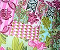

|
||
Premium Patterns Wintry Mix Mitts Love Bytes HawkeyeFree Patterns Kiddie Cadet Summerlin Ruffled Scarf Seamless DS Sock Simply Seamless Pouch Myriads of MushroomsExtras DIY Mitten Blocker Felt Patch Tutorial Yarn Dyeing Tutorial Needle Pouches Knitting Journal |
May 11, 2007 - Posted by Alice SchneblyZonked.I’m back! Overall the trip was quite fun, but very tiring. The drive is almost 9 hours each way, and when you’re vacation is only 3 days, it’s exhausting! This was the first long trip we’ve taken since Camdyn has been potty trained, and I was a bit worried about the whole thing. The drive from here to Northern California has lots of long stretches of nothingness with no rest stops or anything for that matter. Luckily there were no accidents, but at times Camdyn was very frustrated and was screaming “Pee Pee!” at me telling me she had to go! I am so proud of her, she really is a champ and took the drive very well. My new niece, Jojo, is way cuter in person that I even imagined. I am glad that we got to see her at such a cute young age. It made me miss having such a small baby around—though I don’t miss the diapers or the late night feedings one bit. It makes me think of all the steps along the way, like teething, eating solid foods, and potty training, that I am glad to have finished now! Camdyn loved seeing her new cousin and was so good with the baby. She gave sweet gentle pets and kisses, and kept asking Jojo, “Can I hold you?” I didn’t get much knitting done on the trip, maybe 3-4 inches of progress on the Chevron Scarf. There was lots of baby holding and making sure Camdyn didn’t grab things she wasn’t supposed to at my sister’s apartment. When we got back to the hotel at night we were all exhausted. Camdyn even had an America’s Funniest Home Video moment and fell asleep on the potty. It was priceless! Yesterday and today I have been relaxing. My legs are very stiff from the drive, so the things that have to be done around the house are on hold for a bit. This little mini-trip has gotten me excited for our real vacation, which is in about a month. We’re heading to Boston to visit Grace and Si, and luckily for us that means free lodging, so we can stay longer! We’re trying to think of all the fun things we want to pack into the trip. I haven’t been back to Boston since I graduated from BU four years ago, so I am sure the city has plenty of new and exciting things to check out! I am extremely excited, though our schedule only allowed us to visit in June, when the weather isn’t the best in Boston, but I’m hoping it cooperates! Right now my knitting mojo is a bit stifled. I don’t know what it is, but I have fallen out of love with the Chevron at the moment. I need to start something new, but I really can’t decide on what. Maybe I need to get some sewing done? I am in love with this quilt and it looks simple enough that I might be able to do it. I think it something like that would look great in our guestroom/craft room folded at the foot of the bed over the white duvet. I also need to finish making all the pillow covers I started some time ago. I’m using fabric from Amy Butler’s charm line in the Rosey palette. Other things I’m wanting to try— Amy Butler’s new Gumdrop Pillow pattern Swatch Portraits from Purl Bee Fabric Covered Thumbtacks from How About Orange Corkboard Wall Pockets from Craft Apple I’m hoping I can do most of these projects before my mother-in-law comes to stay with us at the start of next month… wish me luck! |
   Recent ReviewsRecent Posts
 Our Favorites
|
| © 2007 KathrynIvy.com | ||
{kind=link}
{kind=link}